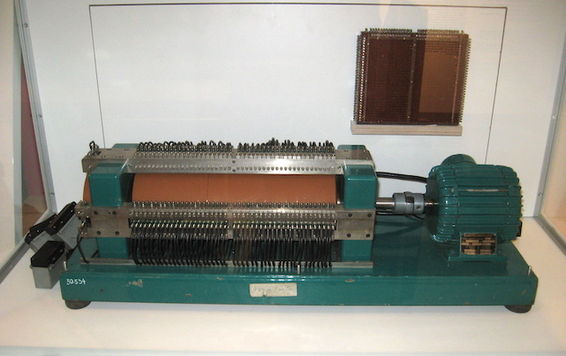
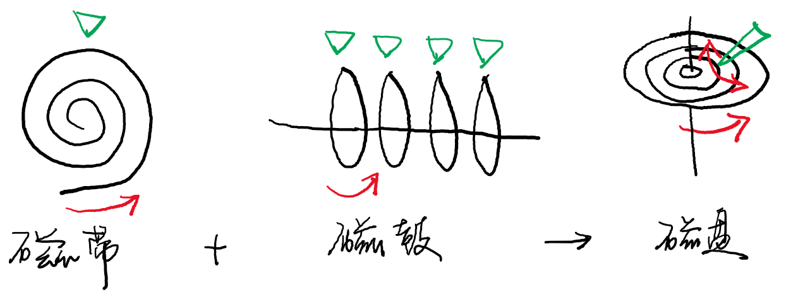
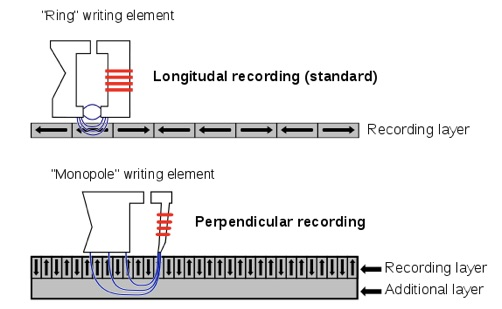
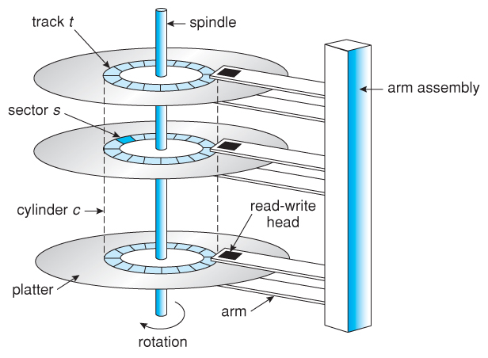
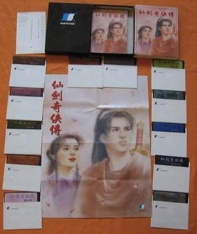
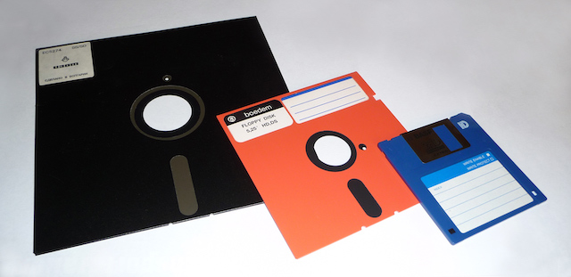
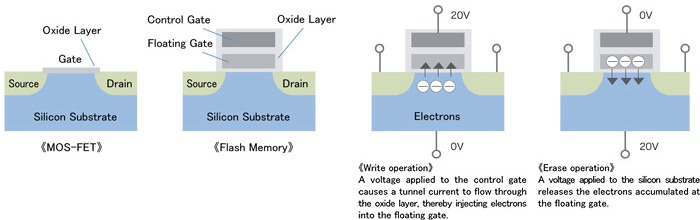
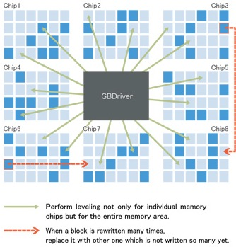
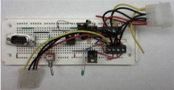

public: True class: center, middle # 期中试卷讲评 --- # P1：名词解释 什么？不知道什么是文件描述符？上了假的操作系统课吧！ * P1定位：送分，有道理即给分 ---- > In Unix and related computer operating systems, a file descriptor (FD, less frequently fildes) is an .red[abstract indicator (handle)] used to access (访问) a file or other input/output resource, such as a pipe or network socket (操作系统中的对象). --- # P2：代码调试 什么？Segmentation Fault了以后还是人脑调试？写了那么多年程序都是假的吧！ * 答gdb：正确 * P2定位：送分，有道理即给分 ---- > @ 张天昀 > > 人脑调试；求助群友；骚扰助教 > > 使用的工具：QQ --- # P3：并发编程 不会并发编程？正常…… ```scala atomic { ready = ch match { case '(' => true case '[' => (depth of "(" == 0) case ']' => (depth of "[" > 0) && (depth of "(" == 0) case ')' => (depth of ")" > 0) } if (ready) { putchar(ch) } } ``` 所以你可以很容易写出一个条件变量的版本 * 信号量要注意死锁：lock后P，其他线程无法获得lock --- # P3：信号量 先保证括号合法(生产者-消费者问题；缓冲区无穷大) ```C '(': putchar(); V(fill1); ')': P(fill1); putchar(); '[': putchar(); V(fill2); ']': P(fill2); putchar(); ``` 一些分析 * 任何时候，`(`都是可以打印的 * 只要满足`)`和`]`的条件，也是可以直接打印的 * 所以只需要考虑`(`：`P(there-is-no-"(")` * 问题是，谁来`V`呢？ * 实际需要的是`P(there-is-no-"("); putchar();`的.red[原子性] --- # P3：信号量 (cont'd) ```c '(': lock("("); // assume lock can nest putchar(); V(fill1); ')': P(fill1); putchar(); unlock(")"); '[': lock("("); putchar(); V(fill2); unlock(")"); ']': P(fill2); lock("("); putchar(); unlock(")"); ``` --- # P3：信号量 (cont'd) ```c '(': read_lock("("); // 可以有多个读者同时获得锁 putchar(); V(fill1); ')': P(fill1); putchar(); read_unlock(")"); '[': write_lock("("); // 但同时只能有一个写者获得锁 putchar(); V(fill2); write_unlock(")"); ']': P(fill2); write_lock("("); putchar(); write_unlock(")"); ``` --- # P3：一些有趣的事实 关于并发 * 同步的核心是“wait for something to happen” * 所以条件变量是最自然的同步方式 * UNIX一开始就是这样同步的 -- count: false ---- 并发系统有两个安全性指标： * safety - “坏事永远不会发生”，例如打印出`][` * liveness - “好事必将发生” * 所以可以写出safe但不fair (某些线程没有liveness)的程序，例如`if (char != '(') continue;` --- # P4：系统调用 管道和重定向的实现 (系统调用序列) * 很惊讶很多同学这道题没有做好 ---- Try it: ``` strace -f sh -c 'echo hello | cat' 2>&1 | \ grep 'fork\|execve\|open\|close\|pipe\|dup\|read\|write' ``` --- # P5：ltrace 第一问：`/proc/[pid]/maps`会告诉你答案 - vvar, vdso, vsyscall (?) 第二问：RTFM ---- .blue[第三问不计分] (只是看看大家有什么想法) * 为了实现应用程序到库函数的调用，只需要hack PLT就行了 * 把调用的地址替换成另一个地址 * mmap一段ltrace代码？Trap指令？ * 如何做到对进程行为的影响最小？ --- # P5：ltrace (cont'd) 如果你想搞清楚发生了什么 * [RTFSC](http://www.ltrace.org) * RTFM: `ltrace -D 77` ，debug info ---- ``` execute_program.c:101: Executing `/bin/echo'... trace.c:83: trace_me: pid=23186 ltrace-elf.c:570: ltelf_read_elf(filename=/proc/23186/exe) ltrace-elf.c:571: Reading ELF from /proc/23186/exe... ltrace-elf.c:697: /proc/23186/exe 47 PLT relocations ... (设置断点) breakpoint.c:85: enable_breakpoint: pid=23186, addr=0x55f5ec0a44d0, symbol=fclose ... ``` --- class: center, middle # 持久化：存储介质 蒋炎岩 <jyy@nju.edu.cn> 南京大学计算机软件研究所 --- # 本讲概述 > 计算机是为人服务的。 > > * 持久地存储代码/数据/文档一直是计算机世界最基础的需求 > * 这是Three Easy Pieces里的第三部分：Persistence ---- * 存储介质的故事 --- class: center, middle # 存储1 Bit的故事 --- # 存储介质 * 一个存储数据的物理设备 * 逻辑上可以看成是一个bit/byte array * 不同类型的设备对read/write的支持不同 * 本讲只讨论persistent storage (数据不会因为断电而消失) ---- 几个重要的维度：价格、容量、速度、可靠性 --- # Magnetic Tape (1928) 磁比特数组 * 纸带上均匀粘上磁粉<math>\textrm{Fe}_2\textrm{O}_3</math> * 支持顺序写入/读取 * 写入：电磁铁磁化；读取：电磁感应 + 放大 .center[<img src="../static/wiki/os/2019/img/fritz.jpg" width="400px"/>] --- # Magnetic Drum (1932) “并行版”磁带 * 更快的速度 * 更好的随机read/write性能 .center[] --- # Hard Disk (1956) “二维并行版”磁带 * 我们可以用整个二维平面来存储bits * 在二维平面上寻址需要两个维度的控制 .center[] --- # Hard Disk (cont'd) 本质上，“硬盘”是很多磁带的集合 .center[] --- # Hard Disk (cont'd) .center[] ---- 柱面 + 磁道 + 扇区 = 定位到512字节 --- # Hard Disk (cont'd) 讨论：.green[价格、容量、速度、可靠性] -- count: false ---- * 二维平面上铺满了磁带 (高密度) * 7200rpm → 120rps → 寻道时间 * 8.3ms可以读写任何一个扇区 (随机访问) * 连续读取可以更快；理论速度：柱面数 x 转速 x 比特密度 * HDD是目前市场上最高性价比的随机存储设备 * 可靠性相对一般 * 经不起摔：读写头划伤磁盘片…… * 依靠数据冗余容错 --- # Hard Disk：小结 便宜快速的存储介质，依旧可以看作是一个数组： * `read/write(buf, offset, 512);` * 磁盘内置的控制器会帮我们翻译成读写头的移动/读写指令 ---- 读写延迟variance很大 * 磁头刚好位于读写扇区下，很快完成 * 否则可能要等磁头准备好，再等磁盘转一圈 --- # Floppy Disk (1971) * 把“hard disk”的读写头和盘片分开 * 读写头：floppy drive (每个电脑一份) * 盘片：floppy disk (可以自由替换、拷贝……) ---- * (.red[-]) 速度/可靠性不可避免会降低 * (.green[+]) 但适合作为交换数据的媒介 --- # Floppy Disk (cont'd) .float-right[] 8" (1971), 5.25" (1975), 3.5" (1981) * 最初的软盘成本很低，就是个纸壳子 * 3.5英寸软盘已经是硬♂的了 * 一个软件的release可能需要很多张软盘，需要在游戏过程中频繁换盘 .float-leftt[] --- # Compact Disk (CD, 1980) 除了磁介质以外，还有别的办法可以存储1bit吗？当然有了——.red[挖坑] * 在完美反射光线的表面上挖出(几乎)不反射光线的坑 * 激光扫过表面，就能读出坑的信息来 .center[<img src="../static/wiki/os/2019/img/cdplay.gif" width="300px"/>] -- count: false ---- 之后有了CD-RW，可以用激光器烧出一个坑来 (666) * 用append-only的数据结构实现读/写 --- # Solid State Drive (1991) 磁的缺点：需要机械部件二维寻址 坑的缺点：一旦挖坑，填坑很困难 (CD是只读的) 最后还得靠.red[电]解决问题 ---- NAND Flash * Floating Gate的充电/放电实现1bit信息的存储 .center[] --- # USB Flash Disk (1999) 优盘容量更大、速度更快、相当便宜 * 很快就取代了软盘，成为了人手n个的存储介质 ---- * Compact Flash (CF, 1994) * USB Flash Disk (1999) * …… --- # NAND Flash (cont'd) 为什么Flash Drive在很长一段时间里都没有取代HDD？ * NAND flash有一个严重的问题：wear out * 放电做不到100%放干净 * .red[放电数千/数万次以后，就好像是“充电”状态了] ---- 所以.blue[千万不要在便宜优盘上存储重要数据] --- # NAND Flash (cont'd) 后来怎么取代HDD了呢？ * wear leveling：软件管理那些可能出问题的blocks .center[] --- # Testing SSDs 什么？硬件里的软件？ * 谁写出来的？.blue[那可得有bug啊]！ * 让我们好好构造疯狂的workloads，把它弄挂吧！ .center[] > M. Zheng, J Tucek, F. Qin, and M. Lillibridge. Understanding the Robustness of SSDs under Power Fault. In *Proc. of FAST*, 2013. --- # Testing SSDs (cont'd) | Device | Model | Year | Bug? | | ------ | ----- | ---- | ---- | | SSD#1 | A-1 | 11 | Y | | SSD#2 | B | 10 | Y | | SSD#3 | C-1 | 11 | Y | | SSD#4 | D-1 | 11 | - | | SSD#5 | E-1 | 11 | Y | | SSD#6 | A-2 | 12 | Y | | SSD#7 | E-2 | 12 | Y | | SSD#8 | A-3 | 11 | Y | | SSD#9 | A-3 | 12 | Y | | SSD#10 | A-2 | 11 | Y | | SSD#11 | C-2 | 11 | Y | | SSD#12 | C-2 | 11 | Y | | SSD#13 | D-1 | 11 | - | | SSD#14 | E-1 | 11 | Y | | SSD#15 | E-3 | 09 | Y | --- # Non-Volatile Memory 上述各类存储介质的统称 ---- 存储技术一直在发展 * 更大的容量、更快的速度、更先进的软件管理 (Intel Optane) * 容量超过DRAM；性能开始接近DRAM * NVM会给我们带来什么？ > K. Bailey, L. Ceze, S. D. Gribble, and H. M. Levy. Operating System Implications of Fast, Cheap, Non-Volatile Memory. In *Proc. of HotOS*, 2011.